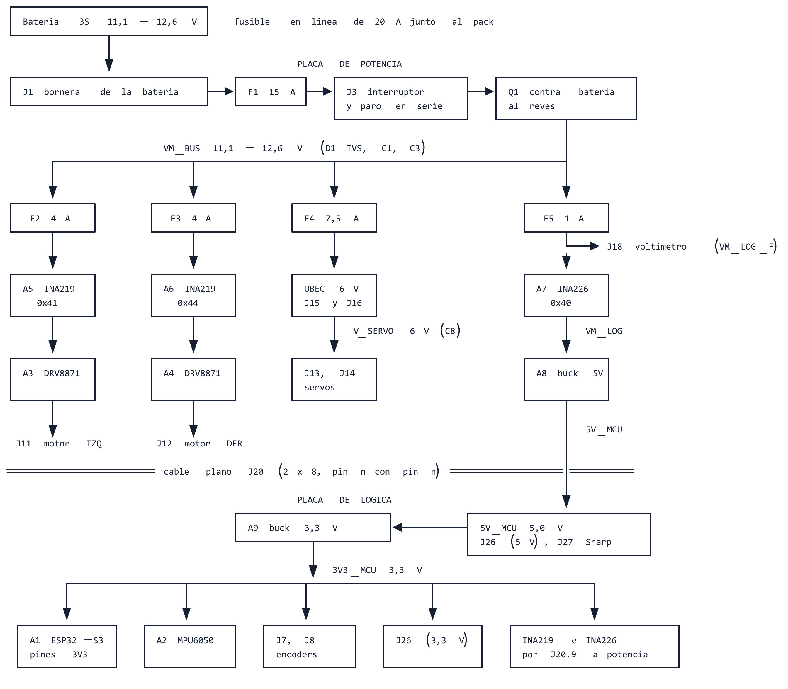
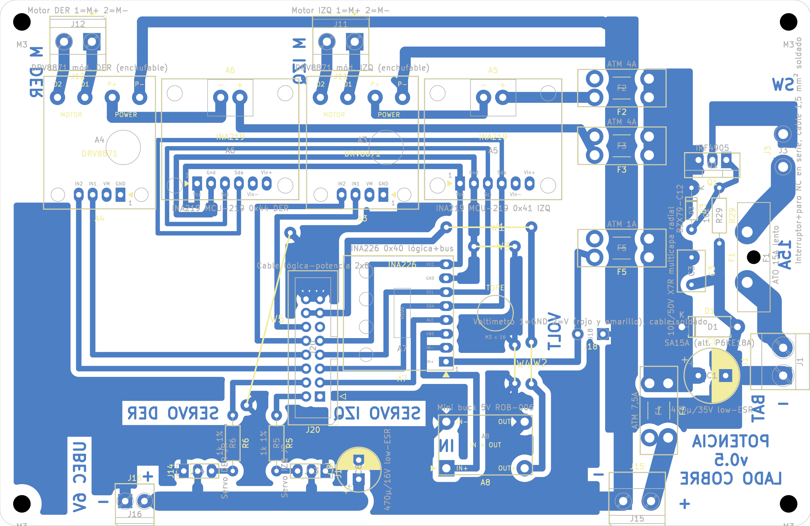
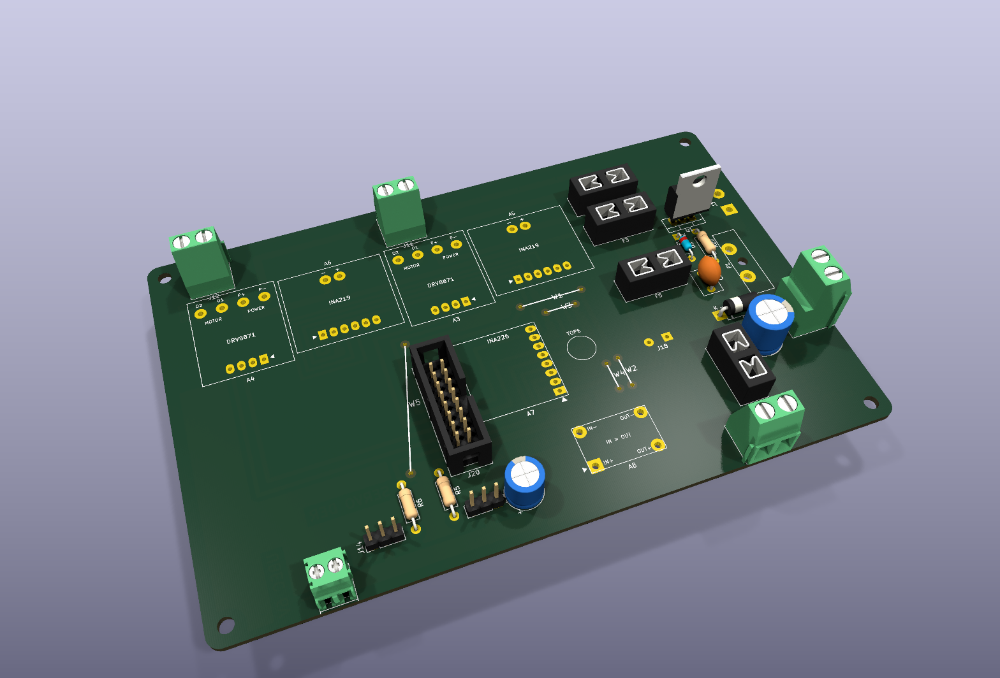
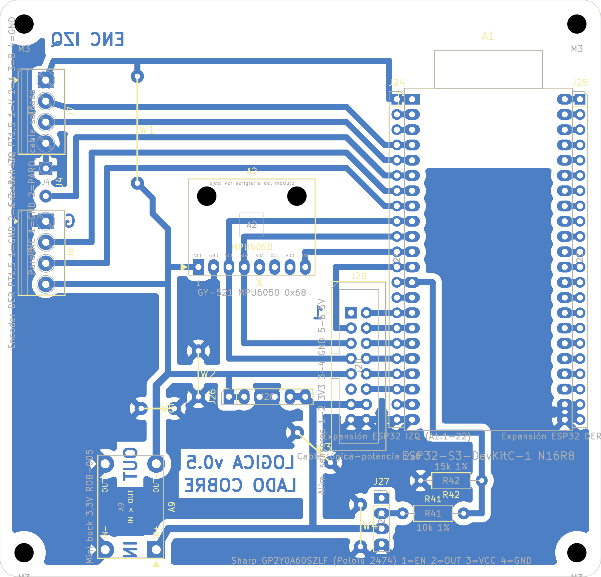
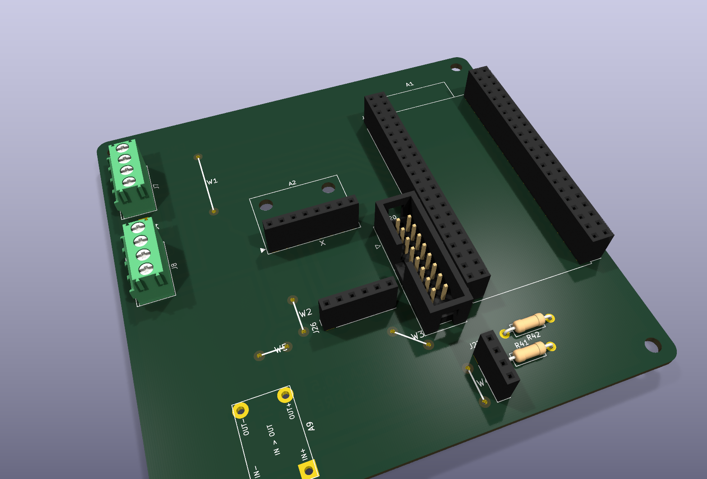

Fecha: 31/10/2026. Versión: v0.5, la final. Reemplaza a todas las anteriores: descartar cualquier impresión de la v0.4.
Dos placas caseras de una sola cara (cobre abajo, componentes arriba), unidas por un cable plano de 16 hilos (J20). Casi todo lo que llevan son módulos comprados; la placa es la interfaz entre ellos. Fuera de los módulos solo hay conectores, fusibles, la protección de entrada, tres capacitores y cinco resistencias, y cada uno tiene su razón (sección 3).
Cómo usar este documento: cada uno revisa una parte y marca las casillas ☐ de la sección 8 (conexiones) con sus iniciales. Lo que no cierre, se anota y se lo pasa al responsable de electrónica antes de fabricar.

| Módulo | Placa | Toma la energía de | Tensión | Notas |
|---|---|---|---|---|
| A3, A4 DRV8871 | Potencia | VM_BUS por F2/F3 y el shunt de su INA219 | 11,1–12,6 V | Lógica interna propia; entradas IN1/IN2 de 3,3 V desde la ESP32 por J20 |
| A5, A6 INA219 | Potencia | 3V3_MCU por J20.9 (desde A9) | 3,3 V | Miden la corriente de cada motor (shunt de 0,1 Ω en la línea del motor) |
| A7 INA226 | Potencia | 3V3_MCU por J20.9 (desde A9) | 3,3 V | Mide corriente y tensión de la rama lógica (VM_LOG): es la medición de batería |
| A8 buck 5 V | Potencia | VM_LOG (después de F5 y del shunt de A7) | entra 11,1–12,6 V, sale 5,0 V | Alimenta todo lo de 5 V: A9, J26 y el Sharp, por J20.13/14 |
| UBEC 6 V | Potencia (afuera) | VM_BUS por F4, en J15 | entra 11,1–12,6 V, sale 6,0 V | Sale por J16 a los servos J13/J14 (V_SERVO, con C8) |
| Voltímetro | Potencia (afuera) | VM_LOG_F en J18 | 11,1–12,6 V | Muestra la tensión de la batería |
| A9 buck 3,3 V | Lógica | 5V_MCU por J20.13/14 | entra 5,0 V, sale 3,3 V | Alimenta la ESP32 por sus pines 3V3, la MPU, los encoders, J26 y los INA |
| A1 ESP32-S3 | Lógica | 3V3_MCU en sus pines 1 y 2 (3V3) | 3,3 V | Su pin 5V queda solo para el USB. No enchufar USB con la batería conectada |
| A2 MPU6050 | Lógica | 3V3_MCU en VCC | 3,3 V | I2C a 3,3 V, dirección 0x68 |
| Encoders | Lógica (afuera) | 3V3_MCU en J7/J8 | 3,3 V | Señales A y B de 3,3 V a la ESP32 (pull-ups internas) |
| Sharp GP2Y0A60SZLF | Lógica (afuera) | 5V_MCU en J27.3 | 5,0 V, unos 33 mA | Salida analógica por el divisor R41/R42 a GPIO3 |
| Sensores nuevos | Lógica (afuera) | J26: 3,3 V y 5 V | 3,3 o 5 V | Hasta unos 200 mA en 3,3 V y 300 mA en 5 V entre todos |
| Dato | Valor |
|---|---|
| Medidas | 148 × 96 mm (entra en una placa virgen de 10 × 15 cm), esquinas redondeadas de 3 mm |
| Fijación | 4 agujeros M3 (3,2 mm) con centro a 4 mm de cada borde; separadores de 10 mm |
| Espesor | Placa virgen común de una cara (≈ 1,6 mm) |
| Piezas | 30 del esquema: 6 módulos (A3, A4, A5, A6, A7, A8) y 24 conectores y componentes; 5 puentes de alambre |


| Conector | Qué va | Cable |
|---|---|---|
| J1 | Batería: 1 = −, 2 = + (rótulos BAT y −), con un fusible en línea de 20 A junto al pack | 1,5 mm² |
| J3 (pads) | Interruptor general y botón de parada de emergencia (con traba, 15 A o más), en serie. Atar el cable con un precinto al separador de la esquina superior derecha | 1,5 mm², soldado |
| J11 / J12 | Motor IZQ / DER (1 = M+) | El del motor |
| J15 / J16 | Entrada del UBEC (1 = −, 2 = +) / salida del UBEC a 6,0 V (1 = GND, 2 = +). Con polaridad: el pad cuadrado es el −. Medir 6,0 V en J16 antes de enchufar los servos | El del UBEC |
| J13 / J14 | Servo IZQ / DER: 1 = GND, 2 = V, 3 = señal. La señal de los dos queda hacia el centro | JR del servo |
| J18 (pads) | Voltímetro: 1 = GND (negro), 2 = rojo y amarillo juntos | Soldado |
| J20 | Cable plano a la placa de lógica, pin n con pin n (pines 1 y 11 sin conexión) | Plano de 16 hilos, corto |
| Dato | Valor |
|---|---|
| Medidas | 100 × 96 mm (entra en una placa virgen de 10 × 15 cm), esquinas redondeadas de 3 mm |
| Fijación | 4 agujeros M3 (3,2 mm) con centro a 4 mm de cada borde; separadores de 10 mm; además, 2 agujeros de 3,2 mm para atornillar la MPU (A2), en (34,5; 32,7) y (49,5; 32,7) mm |
| Espesor | Placa virgen común de una cara (≈ 1,6 mm) |
| Piezas | 13 del esquema: 3 módulos (A1, A2, A9) y 10 conectores y componentes; 5 puentes de alambre |


| Conector | Qué va | Cable |
|---|---|---|
| J4 (pads) | Paro: 1 = GND, 2 = PARO (GPIO6). Con un botón de un solo contacto, puentear con alambre | Alambre o 0,5 mm² |
| J7 / J8 | Encoder IZQ (1 V, 2 A, 3 B, 4 GND) / DER (1 GND, 2 A, 3 B, 4 V). Alimentación de 3,3 V | El del motor |
| J20 | Cable plano a la placa de potencia, pin n con pin n (pines 1 y 11 sin conexión) | Plano de 16 hilos, corto |
| J24 / J25 | Expansión: cada pin repite el de la ESP32 que tiene al lado | Dupont |
| J26 | Alimentación de sensores: 1-2 3,3 V, 3-4 GND, 5-6 5 V | Dupont |
| J27 | Sharp GP2Y0A60SZLF: 1 EN (sin conexión), 2 OUT, 3 VCC 5 V, 4 GND. Pin 1 arriba | Dupont de 4 hilos, pin n con pin n |
Criterio del equipo (31/10/2026): solo lo que pide una hoja de datos, lo que hace falta para que funcione y las protecciones que cuidan módulos caros (la ESP32 entre ellos). Todo lo demás se quitó (ver «Lo que se quitó y por qué», más abajo).
| Ref. | Qué es | Para qué está | Qué pasa si no está | Cómo se monta |
|---|---|---|---|---|
| F1 | Portafusible ATO con fusible de 15 A lento | Fusible general de la batería, después del conector J1 | Un corto en la placa quema pistas o cables, o la batería | Fusible lento: aguanta el arranque de los motores |
| F2, F3 | Portafusibles mini con fusibles de 4 A | Uno por motor (IZQ y DER), antes de cada INA219 y DRV8871 | Un motor trabado o un DRV en corto queda sin corte | — |
| F4 | Portafusible mini con fusible de 7,5 A | Alimentación del UBEC de los servos | Un servo trabado o un UBEC en corto queda sin corte | — |
| F5 | Portafusible mini con fusible de 1 A | Rama de la lógica: INA226, buck de 5 V y voltímetro | Un corto en la lógica o en el cable J20 sin corte | — |
| Q1 | MOSFET de canal P IRF4905 (TO-220) | Protección contra batería al revés. Con la batería al derecho conduce y casi no pierde tensión; al revés no deja pasar corriente | Con la batería conectada al revés se queman todos los módulos de una vez | La aleta queda con tensión de batería: disipador con mica y buje aislante, o que no toque nada metálico |
| R29 | Resistencia de 10 kΩ | Lleva el gate de Q1 a masa para que conduzca | Q1 no enciende y la placa no recibe tensión | Sin polaridad |
| D3 | Zener de 12 V (BZX79-C12) | Limita la tensión entre gate y source de Q1, que soporta ±20 V | Con un pico de tensión, Q1 puede romperse | Con polaridad: la banda va hacia VM_BUS (ver la guía impresa) |
| D1 | TVS SA15A (alternativa P6KE18A) | Absorbe los picos de tensión que generan los motores al frenar o cambiar de sentido | Los picos pueden superar lo que aguantan los DRV8871 (45 V) y los bucks | Con polaridad: la banda va hacia VM_BUS |
| C1 | Electrolítico de 470 µF / 35 V low-ESR | Reserva de energía a la entrada: la hoja del DRV8871 pide capacidad en la alimentación de los motores | Caídas de tensión cuando los motores arrancan, con reinicios de la ESP32 | Con polaridad: el − hacia el lado de J1 (franja del capacitor) |
| C3 | Cerámico de 10 µF / 50 V | Lo pide la ficha del BMS (nota 3) entre P+ y P−. En la placa va entre VM_BUS y GND, que es la salida del pack después de F1, el interruptor y Q1 | El BMS puede cortar o leer mal en los transitorios | Sin polaridad |
| C8 | Electrolítico de 470 µF / 16 V low-ESR | Reserva de energía para los servos | Los servos hacen caer la tensión cuando hacen fuerza a la vez | Con polaridad: el − hacia el bus de masa |
| R5, R6 | Resistencias de 1 kΩ | En serie con la señal de cada servo. Si el conector del servo entra girado o corrido un pin, limitan la corriente que llega al pin de la ESP32. Además pasan por encima del bus de masa de los servos | Con el conector corrido un pin, los 6 V del servo llegan al pin de la ESP32 sin límite: se quema el pin y puede subir el 3,3 V de toda la lógica | Sin polaridad |
| W1–W5 | Puentes de alambre estañado de 0,6 mm | La placa es de una cara: donde una pista tiene que cruzar otra, salta por arriba con un alambre | La placa no funciona: quedan conexiones abiertas | Ver la sección 4 |
Además, fuera de la placa, un fusible en línea de 20 A junto al pack de baterías: protege el cable entre la batería y J1.
| Ref. | Qué es | Para qué está | Qué pasa si no está | Cómo se monta |
|---|---|---|---|---|
| R41 | Resistencia de 10 kΩ 1 % | Con R42, baja la salida del sensor de distancia Sharp (J27) antes de entrar a GPIO3: de 3,6 V como máximo a 2,2 V | La ESP32 se daña o lee mal: el Sharp alimentado con 5 V entrega hasta 3,6 V cerca del piso, y la entrada analógica de la ESP32 llega a 3,1 V. Con el cable mal enchufado pueden llegar 5 V: el divisor los baja a 3,0 V | Sin polaridad |
| R42 | Resistencia de 15 kΩ 1 % | La otra mitad del divisor, hacia masa | Ídem | Sin polaridad |
| W1–W5 | Puentes de alambre estañado de 0,6 mm | Igual que en la potencia | La placa no funciona | Ver la sección 4 |
En la v0.4 se sacó todo lo que los módulos ya resuelven o que solo era protección extra, por pedido del equipo (y R43, con el cambio del ultrasonido por el Sharp). Quedan como referencia por si hiciera falta volver a ponerlo:
| Quitado | Era | Ahora |
|---|---|---|
| C4, C5 | Capacitores de 470 µF junto a cada DRV8871 | El módulo trae su propio 47 µF/50 V |
| R1–R4, R35–R38 | Pull-down y resistencias en serie en las entradas de los DRV | El DRV8871 tiene pull-down interno |
| R7, R8 | Pull-down de las señales de los servos | El firmware configura esos pines apenas arranca |
| C9 | Segundo capacitor de los servos | Queda C8 |
| R22, R23, C14 | Divisor para medir la batería por una entrada analógica | La tensión de la batería la mide el INA226 |
| R13–R16, R24 | Pull-ups de encoders y paro | Pull-ups internas de la ESP32 (activarlas en el firmware) |
| D4, R28 | LED de encendido | Sin indicador en la placa; el voltímetro muestra la tensión |
| C30 | Capacitor en la entrada del buck de 3,3 V | El módulo trae el suyo |
| R43 | Resistencia en serie con el TRIG del HC-SR04 | El Sharp no tiene TRIG: el ultrasonido se reemplazó (ELE-044) |
| Módulo | Placa | Montaje | Orientación |
|---|---|---|---|
| A1 ESP32-S3 DevKitC | Lógica | Zócalo 2 × 22 | Cortar el pin 24 (GPIO43) del módulo y tapar esa posición del zócalo: así solo entra en una posición. Antena hacia el borde superior, USB-C hacia abajo |
| A2 MPU6050 | Lógica | Zócalo 1 × 8 | Pin 5 cortado y posición tapada, igual que A1 |
| A3, A4 DRV8871 | Potencia | Zócalo: tira 1 × 4 y 4 posiciones sueltas | Desoldar las borneras del módulo y poner pines macho en esos agujeros (paso de 5,0 mm) |
| A5, A6 INA219 | Potencia | Soldados | Antes de soldar, hacer el puente de dirección: A0 en A5 (0x41) y A1 en A6 (0x44) |
| A7 INA226 | Potencia | Soldado | Pin 1 (IN+) en el pad cuadrado |
| A8 buck de 5 V, A9 buck de 3,3 V | Potencia / lógica | Soldados sobre 4 pines macho con el espaciador | IN+ en el pad cuadrado; el rótulo «IN» del cobre marca el borde de entrada. Los rótulos del módulo están en su cara de abajo: leerlos antes de presentarlo |
Los módulos soldados quedan unos 2,5 mm sobre la placa (el espaciador de plástico de la tira de pines).
Por qué algunos van soldados: A5–A9 se pueden enchufar girados y se queman. Soldados con la orientación verificada no hay riesgo. Los que van en zócalo están codificados (A1, A2) o no se dañan girados (A3, A4).
Pololu #2474 (Sharp GP2Y0A60SZLF, versión de 5 V), mirando al piso para detectar escalones. Va con un cable Dupont de 4 hilos, pin n con pin n en el orden del carrier: 1 EN, 2 OUT, 3 VCC, 4 GND (pin 1 arriba en la placa; en el carrier, GND es el pad cuadrado). EN queda sin conexión: el carrier ya lo deja activo.
Se alimentan con 3,3 V desde la placa (el vendedor indica 3,3–5 V; sin hoja de datos, SUP-53). Colores según el vendedor: azul = + del encoder, negro = GND, amarillo y verde = señales A y B (rojo y blanco son del motor y van a J11/J12 de la potencia).
| Bornera | 1 | 2 | 3 | 4 |
|---|---|---|---|---|
| J7 (izquierdo) | azul (V) | amarillo (A) | verde (B) | negro (GND) |
| J8 (derecho) | negro (GND) | amarillo (A) | verde (B) | azul (V) |
Prueba antes de conectarlos, con un motor suelto: azul a 3,3 V y negro a GND, girar la rueda despacio a mano y medir que amarillo y verde salten entre unos 0 V y unos 3,3 V. Si no hay pulsos, probar con 5 V y avisar al responsable de electrónica: si las señales llegan a 5 V, no se pueden conectar directo a la ESP32. Si un motor cuenta al revés, se corrige en el firmware intercambiando A y B.
Alambre de cobre estañado de 0,6 mm, del lado de los componentes, pegado a la placa y antes que todo lo demás. Las posiciones están en la guía impresa (*_montaje_cara_superior.pdf).
| Placa | Puente | Qué une |
|---|---|---|
| Potencia | W1, W2 | 5 V del buck A8 hacia el cable J20 |
| Potencia | W3, W4 | Masa de los INA |
| Potencia | W5 | Masa del cable J20 con la masa general. Largo (32 mm) y en diagonal: enfundarlo en termocontraíble y no dejarlo debajo de la carcasa de J20 |
| Lógica | W1 | 3,3 V entre las dos mitades del riel |
| Lógica | W2–W5 | Masa entre zonas del relleno |
Los módulos ya están comprados (5.1). Lo demás es lo que hay que conseguir para armar las dos placas.
| Ref. | Módulo | Montaje |
|---|---|---|
| A1 | ESP32-S3-DevKitC-1 N16R8 (Heemol) | Zócalo, con el pin 24 (GPIO43) cortado y esa posición tapada |
| A2 | MPU6050 GY-521 | Zócalo, con el pin 5 quitado y esa posición tapada |
| A3, A4 | DRV8871 (2 unidades; hay más de repuesto) | Zócalo, con pines macho en lugar de sus borneras |
| A5, A6 | INA219 MCU-219 | Soldado, con pines macho en lugar de su bornera. Puente A0 en A5 y A1 en A6 |
| A7 | INA226 | Soldado, con el pin 1 (IN+) en el pad cuadrado |
| A8 | Mini buck de 5 V (ROB-006, tipo Mini-360), placa de potencia | Soldado sobre 4 pines macho, IN+ en el pad cuadrado, junto al rótulo IN |
| A9 | Mini buck de 3,3 V (ROB-005, tipo Mini-360), placa de lógica: alimenta la ESP32 y la IMU | Soldado sobre 4 pines macho, IN+ en el pad cuadrado, junto al rótulo IN |
| — | UBEC YSIDO 6 A, voltímetro ROB-004, sensor de distancia Pololu #2474 (Sharp GP2Y0A60SZLF, 5 V; reemplaza al HC-SR04) | Fuera de las placas, con cables a J15/J16, a los pads J18 y a J27 (cable Dupont de 4 hilos, pin n con pin n) |
| Cant. | Ref. | Valor | Encapsulado | Repuesto |
|---|---|---|---|---|
| 2 | R5, R6 | 1 kΩ 1 % 1/4 W | axial | |
| 1 | R29 | 10 kΩ 1/4 W | axial | |
| 1 | C1 | 470 µF 35 V low-ESR | radial Ø10, paso 5 | |
| 1 | C8 | 470 µF 16 V low-ESR | radial Ø8, paso 3,5 | |
| 1 | C3 | 10 µF 50 V multicapa X7R | radial, paso 5 | |
| 1 | D1 | TVS SA15A (alt. P6KE18A; no P6KE15A) | DO-15 | |
| 1 | D3 | Zener BZX79-C12 (12 V, 0,5 W) | DO-35 | |
| 1 | Q1 | IRF4905 (MOSFET P) | TO-220 | |
| 1 | — | Disipador para TO-220 de 15 °C/W o menos, con mica y buje aislante (la aleta tiene tensión de batería) | ||
| 1 | F1 | Portafusible ATO de PCB + fusible ATO 15 A lento | 2 fusibles | |
| 4 | F2–F5 | Portafusible mini (ATM) de PCB, tipo Keystone 3568 | ||
| 2 | F2, F3 | Fusible ATM 4 A | 2 | |
| 1 | F4 | Fusible ATM 7,5 A | 1 | |
| 1 | F5 | Fusible ATM 1 A | 2 | |
| 1 | J1 | Bornera de 2 polos, paso 5,08 mm, de 15 A o más (KF301 o similar) | ||
| 3 | J11, J12, J15 | Bornera de 2 polos, paso 5,08 mm (KF301) | ||
| 1 | J16 | Bornera de 2 polos, paso 3,5 mm (KF350) | ||
| 2 | J13, J14 | Tira macho 1 × 3 (headers de los servos) | ||
| 1 | J20 | Conector IDC macho 2 × 8 con caja (box header) | ||
| — | J3 | Pads para soldar el cable del interruptor y del botón de emergencia | ||
| — | J18 | Pads para soldar los cables del voltímetro |
| Cant. | Ref. | Valor | Encapsulado |
|---|---|---|---|
| 2 | J7, J8 | Bornera de 4 polos, paso 3,5 mm (KF350) | |
| 1 | J20 | Conector IDC macho 2 × 8 con caja | |
| 2 | J24, J25 | Tira hembra 1 × 22 (expansión) | |
| 1 | J26 | Tira hembra 1 × 6 (alimentación de sensores) | |
| 1 | J27 | Tira hembra 1 × 4 (sensor Sharp: 1 EN, 2 OUT, 3 VCC, 4 GND) | |
| 1 | R41 | 10 kΩ 1 % 1/4 W (divisor de la salida del Sharp) | axial |
| 1 | R42 | 15 kΩ 1 % 1/4 W (divisor de la salida del Sharp) | axial |
| — | J4 | Pads para soldar el cable del paro |
| Cant. | Qué | Para |
|---|---|---|
| 2 | Tira hembra 1 × 22 | Zócalo de la ESP32 (A1), con la posición 24 tapada |
| 1 | Tira hembra 1 × 8 | Zócalo del MPU (A2), con la posición 5 tapada |
| 2 + 8 | Tira hembra 1 × 4, y 8 posiciones sueltas de 1 × 1 | Zócalos de los DRV (A3, A4): la tira de 4 para su header y las sueltas para los agujeros de las borneras, que tienen paso 5,0 mm |
| ~24 | Pines macho sueltos | 4 por DRV y 2 por INA219 en los agujeros de sus borneras, y 4 por cada buck (A8 y A9) |
Las posiciones tapadas (24 de A1 y 5 de A2) se tapan con un pin macho cortado al ras y pegado. En total conviene comprar 5 tiras hembra de 1 × 40 (8,5 mm de alto) y 1 tira macho de 1 × 40. Cada tramo de 1 × 22 (las dos hileras de A1, J24 y J25) sale de una tira distinta, y cada corte de tira hembra pierde una posición: 4 tiras alcanzan justo y la quinta es de margen.
| Cant. | Qué |
|---|---|
| 1 | Botón de parada de emergencia con traba y de 15 A o más en continua, en serie con la potencia (J3). Con un solo contacto, J4 se puentea con alambre (decisión del 31/10/2026, SUP-45) |
| 1 | Interruptor general de 15 A o más en continua (por ejemplo, un balancín de 20 A 12 V DC) |
| 1 | Portafusible en línea + fusible de 20 A, junto a la batería |
| 2 m | Cable de 1,5 mm² (rojo y negro): batería a J1 y lazo del interruptor y el botón de emergencia en J3 |
| 10 cm | Alambre para el puente de J4 (o cable de 0,5 mm² si el botón tiene un segundo contacto) |
| 1 | Cable plano de 16 hilos (largo según mecánica) + 2 conectores IDC hembra 2 × 8 para prensar |
| 1 | Cable Dupont de 4 hilos para el Sharp: macho del lado de J27 (que es hembra) y, del lado del carrier, hembra si se le sueldan pines macho (o se suelda directo) |
| Cant. | Qué |
|---|---|
| 2 | Placa virgen simple faz FR-4 de 10 × 15 cm, 1,6 mm, cobre de 35 µm: una para la potencia (148 × 96 mm) y otra para la lógica (100 × 96 mm) |
| — | Papel ilustración o de transferencia, percloruro férrico o persulfato de sodio |
| — | Mechas de 0,8, 0,9, 1,0, 1,1, 1,2, 1,3, 1,5, 1,8, 2,0, 2,5 y 3,2 mm (ver los informes de taladros) |
| 0,5 m | Alambre de cobre estañado de 0,6 mm para los 10 puentes (5 en la potencia y 5 en la lógica) |
| 20 cm | Termocontraíble de 1,5 mm para W5 de la potencia (largo, en diagonal) |
| 8 + 16 | Separadores M3 de 10 mm y tornillos M3 × 6 |
| — | Estaño, flux y malla desoldante |
Las mechas salen de los informes segway_potencia_taladros.rpt y segway_logica_taladros.rpt.
Archivos STEP de cada placa (contorno, agujeros y los componentes estándar con su modelo 3D):
segway_potencia/fabricacion/rev-0.5/segway_potencia_3d.step y segway_logica/fabricacion/rev-0.5/segway_logica_3d.step.
Los módulos no tienen modelo: ocupar su lugar con un bloque de la altura de la tabla. Coordenadas en mm desde la esquina superior izquierda,
vista desde los componentes (x hacia la derecha, y hacia abajo).
| Pieza | Placa | Altura sobre la placa | Detalle |
|---|---|---|---|
| ESP32-S3 DevKitC en zócalo | Lógica | ≈ 15 mm | Zócalo de 8,5 mm + placa del módulo + conectores USB-C |
| MPU6050 en zócalo | Lógica | ≈ 11 mm | Zócalo de 8,5 mm + módulo |
| Tiras de expansión J24, J25, J26, J27 | Lógica | ≈ 8,5 mm | Tira hembra |
| Borneras J7, J8 (3,5 mm) | Lógica | ≈ 8,5 mm | Más el cable que sale hacia el borde oeste |
| Mini bucks A8, A9 | Las dos | ≈ 8 mm | Espaciador de 2,5 mm + módulo con inductor |
| DRV8871 en zócalo | Potencia | ≈ 20 mm | Zócalo de 8,5 mm + módulo con su electrolítico de 47 µF |
| INA219, INA226 soldados | Potencia | ≈ 6 mm | Espaciador de 2,5 mm + módulo |
| Q1 IRF4905 con disipador | Potencia | ≈ 25–30 mm | Depende del disipador; la aleta tiene tensión de batería |
| C1 470 µF 35 V (Ø10 mm) | Potencia | ≈ 16–20 mm | |
| C8 470 µF 16 V (Ø8 mm) | Potencia | ≈ 12–16 mm | |
| Portafusible ATO (F1) con fusible | Potencia | ≈ 20 mm | |
| Portafusibles mini (F2–F5) con fusible | Potencia | ≈ 15 mm | |
| Borneras de 5,08 mm (J1, J11, J12, J15) | Potencia | ≈ 10 mm | Más el cable |
| Conector IDC J20 con el cable enchufado | Las dos | ≈ 18 mm | ≈ 9 mm sin el cable |
| Debajo de la placa (lado cobre) | Las dos | ≈ 2 mm | Soldaduras y puntas de pines; van separadores de 10 mm |
Para un módulo o conector, la posición es la de su pin 1; para los agujeros (H), su centro.
| Ref. | Pieza | x (mm) | y (mm) | Giro |
|---|---|---|---|---|
| A3 | DRV8871 mód. IZQ (enchufable) | 70.0 | 35.6 | 180° |
| A4 | DRV8871 mód. DER (enchufable) | 22.0 | 35.6 | 180° |
| A5 | INA219 MCU-219 0x41 IZQ | 84.0 | 33.5 | 0° |
| A6 | INA219 MCU-219 0x44 DER | 36.0 | 33.5 | 0° |
| A7 | INA226 0x40 lógica+bus | 81.4 | 66.0 | 180° |
| A8 | Mini buck 5V ROB-006 | 81.5 | 85.5 | 0° |
| C1 | 470µ/35V low-ESR | 127.5 | 68.6 | 0° |
| C3 | 10µ/50V X7R multicapa radial | 126.3 | 47.0 | -90° |
| C8 | 470µ/16V low-ESR | 65.5 | 87.5 | 90° |
| D1 | SA15A (alt. P6KE18A) | 124.5 | 59.7 | 0° |
| D3 | BZX79-C12 | 126.3 | 34.3 | -90° |
| F1 | ATO 15A lento | 136.4 | 51.6 | 90° |
| F2 | ATM 4A | 118.5 | 17.8 | 180° |
| F3 | ATM 4A | 118.5 | 28.3 | 180° |
| F4 | ATM 7,5A | 122.0 | 70.0 | -90° |
| F5 | ATM 1A | 118.5 | 47.0 | 180° |
| H1 | M3 | 4.0 | 4.0 | 0° |
| H2 | M3 | 144.0 | 4.0 | 0° |
| H3 | M3 | 4.0 | 92.0 | 0° |
| H4 | M3 | 144.0 | 92.0 | 0° |
| J1 | Batería MKDS3 1=P− 2=P+ | 143.0 | 68.6 | 90° |
| J3 | Interruptor+paro NC en serie, cable 1,5 mm² soldado | 143.0 | 30.5 | 90° |
| J11 | Motor IZQ 1=M+ 2=M− | 64.8 | 7.6 | 180° |
| J12 | Motor DER 1=M+ 2=M− | 16.8 | 7.6 | 180° |
| J13 | Servo IZQ JR | 59.4 | 86.0 | -90° |
| J14 | Servo DER JR | 33.6 | 86.0 | 90° |
| J15 | UBEC entrada | 113.8 | 91.5 | 0° |
| J16 | UBEC salida 6V PT1,5 1=GND 2=V+ | 22.9 | 91.5 | 0° |
| J18 | Voltímetro 1=GND 2=V (rojo y amarillo), cable soldado | 110.1 | 61.0 | 180° |
| J20 | Cable lógica-potencia 2x8 | 58.4 | 72.4 | 180° |
| Q1 | IRF4905 | 132.6 | 29.2 | 180° |
| R5 | 1k 1% | 50.5 | 75.8 | -90° |
| R6 | 1k 1% | 42.5 | 75.8 | -90° |
| R29 | 10k | 131.3 | 34.3 | -90° |
| W1 | puente 15.5 mm | 81.5 | 41.5 | 0° |
| W2 | puente 7.6 mm | 97.0 | 62.5 | 0° |
| W3 | puente 7.5 mm | 86.5 | 45.0 | 0° |
| W4 | puente 7.0 mm | 94.0 | 63.0 | 0° |
| W5 | puente 32.5 mm | 53.0 | 42.5 | 0° |
Para un módulo o conector, la posición es la de su pin 1; para los agujeros (H), su centro.
| Ref. | Pieza | x (mm) | y (mm) | Giro |
|---|---|---|---|---|
| A1 | ESP32-S3-DevKitC-1 N16R8 | 68.6 | 16.5 | 0° |
| A2 | GY-521 MPU6050 0x68 | 33.0 | 44.4 | 0° |
| A9 | Mini buck 3,3V ROB-005 | 26.0 | 91.5 | 90° |
| H1 | M3 | 4.0 | 4.0 | 0° |
| H2 | M3 | 96.0 | 4.0 | 0° |
| H3 | M3 | 4.0 | 92.0 | 0° |
| H4 | M3 | 96.0 | 92.0 | 0° |
| J4 | Paro NC 1=GND 2=PARO, cable soldado | 7.6 | 28.0 | -90° |
| J7 | Encoder IZQ PT1,5 1=V 2=A 3=B 4=GND | 7.6 | 13.3 | -90° |
| J8 | Encoder DER PT1,5 1=GND 2=A 3=B 4=V | 7.6 | 36.8 | -90° |
| J20 | Cable lógica-potencia 2x8 | 58.4 | 52.1 | 0° |
| J24 | Expansión ESP32 IZQ (A1.1-22) | 66.0 | 16.5 | 0° |
| J25 | Expansión ESP32 DER (A1.23-44) | 96.5 | 16.5 | 0° |
| J26 | Alim. sensores 1-2 3V3 3-4 GND 5-6 5V | 38.1 | 66.0 | 90° |
| J27 | Sharp GP2Y0A60SZLF (Pololu 2474) 1=EN 2=OUT 3=VCC 4=GND | 63.5 | 82.9 | 0° |
| R41 | 10k 1% | 67.0 | 85.5 | 0° |
| R42 | 15k 1% | 80.2 | 80.0 | 180° |
| W1 | puente 17.8 mm | 22.9 | 12.7 | 0° |
| W2 | puente 7.6 mm | 33.0 | 58.4 | 0° |
| W3 | puente 7.4 mm | 49.5 | 72.0 | 0° |
| W4 | puente 7.0 mm | 60.0 | 84.0 | 0° |
| W5 | puente 5.5 mm | 23.5 | 68.0 | 0° |
El cable va pin n con pin n. Un conector IDC prensado al revés une el pin n con el 17 − n: medir continuidad pin 1 con pin 1 y pin 13 con pin 13 antes de enchufarlo.
| Pin | Potencia | Lógica | Control |
|---|---|---|---|
| 1 | sin conexión | sin conexión | ☐ coincide |
| 2 | SERVO_IZQ_MCU | SERVO_IZQ_MCU | ☐ coincide |
| 3 | INA_ALERT | INA_ALERT | ☐ coincide |
| 4 | SERVO_DER_MCU | SERVO_DER_MCU | ☐ coincide |
| 5 | I2C_SDA | I2C_SDA | ☐ coincide |
| 6 | IN2_DER_MCU | IN2_DER_MCU | ☐ coincide |
| 7 | I2C_SCL | I2C_SCL | ☐ coincide |
| 8 | IN1_DER_MCU | IN1_DER_MCU | ☐ coincide |
| 9 | 3V3_MCU | 3V3_MCU | ☐ coincide |
| 10 | IN2_IZQ_MCU | IN2_IZQ_MCU | ☐ coincide |
| 11 | sin conexión | sin conexión | ☐ coincide |
| 12 | IN1_IZQ_MCU | IN1_IZQ_MCU | ☐ coincide |
| 13 | 5V_MCU | 5V_MCU | ☐ coincide |
| 14 | 5V_MCU | 5V_MCU | ☐ coincide |
| 15 | GND | GND | ☐ coincide |
| 16 | GND | GND | ☐ coincide |
| Pin de la DevKitC | GPIO | Net | Función |
|---|---|---|---|
| 4 | GPIO4 | ENC_IZQ_A | Encoder IZQ, canal A (J7.2) |
| 5 | GPIO5 | ENC_IZQ_B | Encoder IZQ, canal B (J7.3) |
| 6 | GPIO6 | PARO_CONT | Aviso del paro (J4.2); con J4 puenteado queda siempre en 0 |
| 7 | GPIO7 | ENC_DER_A | Encoder DER, canal A (J8.2) |
| 8 | GPIO15 | ENC_DER_B | Encoder DER, canal B (J8.3) |
| 9 | GPIO16 | I2C_SCL | I2C SCL: MPU6050 y, por J20.7, los tres INA |
| 10 | GPIO17 | I2C_SDA | I2C SDA: MPU6050 y, por J20.5, los tres INA |
| 11 | GPIO18 | IMU_INT | Interrupción de la MPU6050 |
| 12 | GPIO8 | INA_ALERT | ALERT del INA226, por J20.3 |
| 13 | GPIO3 | DIST_SUELO | Distancia al suelo: Sharp (J27.2) por el divisor R41/R42 |
| 15 | GPIO9 | SERVO_IZQ_MCU | Servo IZQ (J20.2 → R5 → J13) |
| 16 | GPIO10 | SERVO_DER_MCU | Servo DER (J20.4 → R6 → J14) |
| 17 | GPIO11 | IN2_DER_MCU | DRV8871 DER, IN2 (J20.6) |
| 18 | GPIO12 | IN1_DER_MCU | DRV8871 DER, IN1 (J20.8) |
| 19 | GPIO13 | IN2_IZQ_MCU | DRV8871 IZQ, IN2 (J20.10) |
| 20 | GPIO14 | IN1_IZQ_MCU | DRV8871 IZQ, IN1 (J20.12) |
| Pin de la DevKitC | GPIO | Motivo |
|---|---|---|
| 14 | GPIO46 | strapping: no forzar en el arranque |
| 24 | GPIO43 | UART0 TX (USB-serie CH343P) |
| 25 | GPIO44 | UART0 RX (USB-serie CH343P) |
| 33 | GPIO37 | NO USAR: PSRAM octal |
| 34 | GPIO36 | NO USAR: PSRAM octal |
| 35 | GPIO35 | NO USAR: PSRAM octal |
| 36 | GPIO0 | strapping (BOOT): no forzar en el arranque |
| 37 | GPIO45 | strapping (VDD_SPI): no forzar en el arranque |
| 38 | GPIO48 | LED RGB WS2812 |
| 41 | GPIO20 | USB D+ |
| 42 | GPIO19 | USB D- |
Libres para sensores nuevos (en J24/J25): GPIO1, GPIO2, GPIO42, GPIO41, GPIO40, GPIO39, GPIO38, GPIO47, GPIO21.
Sale directo del esquema de cada placa. Para revisar el ruteo: tomar la vista de cobre de la sección 2 (o la placa ya atacada, con el multímetro en continuidad) y comprobar, net por net, que todos los pines de la fila están unidos y que ninguno toca otra net. Los puentes de alambre W y el relleno de masa cuentan como unión.
| Net y tensión | Pines que une (tienen que estar todos unidos por cobre, puente o relleno, y con nada más) | Revisó | |
|---|---|---|---|
| ☐ | GND 0 V (masa común) | J1.1 (batería −) C1.2 (470µ/35V low-ESR −) C3.2 (10µ/50V X7R multicapa radial pin 2) D1.2 (SA15A (alt. P6KE18A) A) R29.2 (10k pin 2) A3.1 (DRV8871 IZQ GND) A3.6 (DRV8871 IZQ POWER-) A4.1 (DRV8871 DER GND) A4.6 (DRV8871 DER POWER-) J15.1 (UBEC entrada −) J16.1 (UBEC salida GND) J13.1 (servo IZQ GND) J14.1 (servo DER GND) C8.2 (470µ/16V low-ESR −) J18.1 (voltímetro GND) A8.2 (buck 5 V IN-) A8.4 (buck 5 V OUT-) A5.2 (INA219 IZQ Gnd) A6.2 (INA219 DER Gnd) A7.7 (INA226 GND) J20.15 (cable pin 15) J20.16 (cable pin 16) | |
| ☐ | VBAT_P batería, 11,1–12,6 V | J1.2 (batería +) F1.1 (ATO 15A lento pin 1) | |
| ☐ | VBAT_F batería, 11,1–12,6 V | F1.2 (ATO 15A lento pin 2) J3.1 (interruptor y paro lado F1) | |
| ☐ | VBAT_SW batería, 11,1–12,6 V | J3.2 (interruptor y paro lado Q1) Q1.2 (IRF4905 D) | |
| ☐ | VM_BUS 11,1–12,6 V | Q1.3 (IRF4905 S) D3.1 (BZX79-C12 K, banda) C1.1 (470µ/35V low-ESR +) C3.1 (10µ/50V X7R multicapa radial pin 1) D1.1 (SA15A (alt. P6KE18A) K, banda) F2.1 (ATM 4A pin 1) F3.1 (ATM 4A pin 1) F4.1 (ATM 7,5A pin 1) F5.1 (ATM 1A pin 1) | |
| ☐ | Q_POL_G gate de Q1 (≈0 V; −12 V respecto del source) | Q1.1 (IRF4905 G) R29.1 (10k pin 1) D3.2 (BZX79-C12 A) | |
| ☐ | VM_IZQ_F 11,1–12,6 V | F2.2 (ATM 4A pin 2) A5.6 (INA219 IZQ Vin+) A5.8 (INA219 IZQ Vin+_born) | |
| ☐ | VM_IZQ 11,1–12,6 V | A5.5 (INA219 IZQ Vin-) A5.7 (INA219 IZQ Vin-_born) A3.2 (DRV8871 IZQ VM) A3.5 (DRV8871 IZQ POWER+) | |
| ☐ | VM_DER_F 11,1–12,6 V | F3.2 (ATM 4A pin 2) A6.6 (INA219 DER Vin+) A6.8 (INA219 DER Vin+_born) | |
| ☐ | VM_DER 11,1–12,6 V | A6.5 (INA219 DER Vin-) A6.7 (INA219 DER Vin-_born) A4.2 (DRV8871 DER VM) A4.5 (DRV8871 DER POWER+) | |
| ☐ | IN1_IZQ_MCU señal de 3,3 V | J20.12 (cable pin 12) A3.3 (DRV8871 IZQ IN1) | |
| ☐ | IN2_IZQ_MCU señal de 3,3 V | J20.10 (cable pin 10) A3.4 (DRV8871 IZQ IN2) | |
| ☐ | IN1_DER_MCU señal de 3,3 V | J20.8 (cable pin 8) A4.3 (DRV8871 DER IN1) | |
| ☐ | IN2_DER_MCU señal de 3,3 V | J20.6 (cable pin 6) A4.4 (DRV8871 DER IN2) | |
| ☐ | MOT_IZQ_1 salida PWM al motor (0–12,6 V) | A3.7 (DRV8871 IZQ OUT1) J11.1 (motor IZQ M+) | |
| ☐ | MOT_IZQ_2 salida PWM al motor (0–12,6 V) | A3.8 (DRV8871 IZQ OUT2) J11.2 (motor IZQ M−) | |
| ☐ | MOT_DER_1 salida PWM al motor (0–12,6 V) | A4.7 (DRV8871 DER OUT1) J12.1 (motor DER M+) | |
| ☐ | MOT_DER_2 salida PWM al motor (0–12,6 V) | A4.8 (DRV8871 DER OUT2) J12.2 (motor DER M−) | |
| ☐ | VM_UBEC 11,1–12,6 V | F4.2 (ATM 7,5A pin 2) J15.2 (UBEC entrada +) | |
| ☐ | V_SERVO 6,0 V | J16.2 (UBEC salida V+) J13.2 (servo IZQ V) J14.2 (servo DER V) C8.1 (470µ/16V low-ESR +) | |
| ☐ | SERVO_IZQ_MCU señal de 3,3 V | R5.1 (1k 1% pin 1) J20.2 (cable pin 2) | |
| ☐ | SERVO_IZQ_SIG señal de 3,3 V | R5.2 (1k 1% pin 2) J13.3 (servo IZQ señal) | |
| ☐ | SERVO_DER_MCU señal de 3,3 V | R6.1 (1k 1% pin 1) J20.4 (cable pin 4) | |
| ☐ | SERVO_DER_SIG señal de 3,3 V | R6.2 (1k 1% pin 2) J14.3 (servo DER señal) | |
| ☐ | VM_LOG_F 11,1–12,6 V | F5.2 (ATM 1A pin 2) A7.1 (INA226 IN+) J18.2 (voltímetro V) | |
| ☐ | VM_LOG 11,1–12,6 V | A7.2 (INA226 IN-) A7.3 (INA226 VBS) A8.1 (buck 5 V IN+) | |
| ☐ | 5V_MCU 5,0 V | J20.13 (cable pin 13) J20.14 (cable pin 14) A8.3 (buck 5 V OUT+) | |
| ☐ | 3V3_MCU 3,3 V | A5.1 (INA219 IZQ Vcc) A6.1 (INA219 DER Vcc) A7.8 (INA226 VCC) J20.9 (cable pin 9) | |
| ☐ | I2C_SDA señal de 3,3 V | A5.4 (INA219 IZQ Sda) A6.4 (INA219 DER Sda) A7.5 (INA226 SDA) J20.5 (cable pin 5) | |
| ☐ | I2C_SCL señal de 3,3 V | A5.3 (INA219 IZQ Scl) A6.3 (INA219 DER Scl) A7.6 (INA226 SCL) J20.7 (cable pin 7) | |
| ☐ | INA_ALERT señal de 3,3 V | A7.4 (INA226 ALE) J20.3 (cable pin 3) |
Sin conexión, a propósito: J20.11, J20.1.
| Net y tensión | Pines que une (tienen que estar todos unidos por cobre, puente o relleno, y con nada más) | Revisó | |
|---|---|---|---|
| ☐ | GND 0 V (masa común) | A2.2 (MPU6050 GND) J7.4 (encoder IZQ GND) J8.1 (encoder DER GND) J4.1 (paro GND) A1.22 (ESP32-S3 GND) A1.23 (ESP32-S3 GND) A1.43 (ESP32-S3 GND) A1.44 (ESP32-S3 GND) J20.15 (cable pin 15) J20.16 (cable pin 16) J24.22 (expansión IZQ pin 22) J25.1 (expansión DER pin 1) J25.21 (expansión DER pin 21) J25.22 (expansión DER pin 22) J26.3 (alim. sensores GND) J26.4 (alim. sensores GND) A9.2 (buck 3,3 V IN-) A9.4 (buck 3,3 V OUT-) J27.4 (Sharp GND) R42.2 (15k 1% pin 2) | |
| ☐ | DIST_SUELO analógica 0,36–2,2 V | A1.13 (ESP32-S3 GPIO3) J24.13 (expansión IZQ pin 13) R41.2 (10k 1% pin 2) R42.1 (15k 1% pin 1) | |
| ☐ | IN1_IZQ_MCU señal de 3,3 V | A1.20 (ESP32-S3 GPIO14) J20.12 (cable pin 12) J24.20 (expansión IZQ pin 20) | |
| ☐ | IN2_IZQ_MCU señal de 3,3 V | A1.19 (ESP32-S3 GPIO13) J20.10 (cable pin 10) J24.19 (expansión IZQ pin 19) | |
| ☐ | IN1_DER_MCU señal de 3,3 V | A1.18 (ESP32-S3 GPIO12) J20.8 (cable pin 8) J24.18 (expansión IZQ pin 18) | |
| ☐ | IN2_DER_MCU señal de 3,3 V | A1.17 (ESP32-S3 GPIO11) J20.6 (cable pin 6) J24.17 (expansión IZQ pin 17) | |
| ☐ | SERVO_IZQ_MCU señal de 3,3 V | A1.15 (ESP32-S3 GPIO9) J20.2 (cable pin 2) J24.15 (expansión IZQ pin 15) | |
| ☐ | SERVO_DER_MCU señal de 3,3 V | A1.16 (ESP32-S3 GPIO10) J20.4 (cable pin 4) J24.16 (expansión IZQ pin 16) | |
| ☐ | 5V_MCU 5,0 V | J20.13 (cable pin 13) J20.14 (cable pin 14) J26.5 (alim. sensores 5V) J26.6 (alim. sensores 5V) A9.1 (buck 3,3 V IN+) J27.3 (Sharp VCC) | |
| ☐ | 3V3_MCU 3,3 V | A2.1 (MPU6050 VCC) J7.1 (encoder IZQ V) J8.4 (encoder DER V) A1.1 (ESP32-S3 3V3) A1.2 (ESP32-S3 3V3) J20.9 (cable pin 9) J24.1 (expansión IZQ pin 1) J24.2 (expansión IZQ pin 2) J26.1 (alim. sensores 3V3) J26.2 (alim. sensores 3V3) A9.3 (buck 3,3 V OUT+) | |
| ☐ | ENC_IZQ_A señal de 3,3 V | J7.2 (encoder IZQ A) A1.4 (ESP32-S3 GPIO4) J24.4 (expansión IZQ pin 4) | |
| ☐ | ENC_IZQ_B señal de 3,3 V | J7.3 (encoder IZQ B) A1.5 (ESP32-S3 GPIO5) J24.5 (expansión IZQ pin 5) | |
| ☐ | ENC_DER_A señal de 3,3 V | J8.2 (encoder DER A) A1.7 (ESP32-S3 GPIO7) J24.7 (expansión IZQ pin 7) | |
| ☐ | ENC_DER_B señal de 3,3 V | J8.3 (encoder DER B) A1.8 (ESP32-S3 GPIO15) J24.8 (expansión IZQ pin 8) | |
| ☐ | I2C_SDA señal de 3,3 V | A2.4 (MPU6050 SDA) A1.10 (ESP32-S3 GPIO17) J20.5 (cable pin 5) J24.10 (expansión IZQ pin 10) | |
| ☐ | I2C_SCL señal de 3,3 V | A2.3 (MPU6050 SCL) A1.9 (ESP32-S3 GPIO16) J20.7 (cable pin 7) J24.9 (expansión IZQ pin 9) | |
| ☐ | IMU_INT señal de 3,3 V | A2.8 (MPU6050 INT) A1.11 (ESP32-S3 GPIO18) J24.11 (expansión IZQ pin 11) | |
| ☐ | INA_ALERT señal de 3,3 V | A1.12 (ESP32-S3 GPIO8) J20.3 (cable pin 3) J24.12 (expansión IZQ pin 12) | |
| ☐ | PARO_CONT señal de 3,3 V | J4.2 (paro PARO) A1.6 (ESP32-S3 GPIO6) J24.6 (expansión IZQ pin 6) | |
| ☐ | SHARP_OUT analógica 0,6–3,6 V | J27.2 (Sharp OUT) R41.1 (10k 1% pin 1) |
Sin conexión, a propósito: A2.5, A2.6, A2.7, J20.11, J20.1, J27.1.
Expansión: 22 nets que solo unen un pin de la ESP32 con el pin de J24 o J25 que tiene al lado (RST, GPIO46, GPIO43, GPIO44, GPIO1, GPIO2, GPIO42, GPIO41, GPIO40, GPIO39, GPIO38, GPIO37, GPIO36, GPIO35, GPIO0, GPIO45, GPIO48, GPIO47, GPIO21, GPIO20, GPIO19, 5V_USB). Revisar que cada pin de las tiras esté unido a su vecino de A1. ☐
Sin nada conectado, con el multímetro:
Primera alimentación, con fuente limitada a 0,5 A, los DRV8871 sin enchufar y el cable J20 desconectado:
USB y batería: el chip del buck A9 no se pudo identificar, así que como regla fija no se enchufa el USB de la ESP32 con la batería conectada. Programar con la batería desconectada, o con batería y sin USB (por Wi-Fi).
| Placa | ERC (esquema) | DRC (placa) | Netlist |
|---|---|---|---|
| Placa de potencia | 0 errores | 0 errores, 0 sin conectar, 0 diferencias con el esquema | coincide con el esquema |
| Placa de lógica | 0 errores | 0 errores, 0 sin conectar, 0 diferencias con el esquema | coincide con el esquema |
Control eléctrico propio (pines de cada módulo, nets prohibidas en la ESP32, módulos girados o corridos, corriente en las pistas): 0 fallas y 2 avisos. Los dos avisos son conocidos: tramos angostos de pista en algunas nets de potencia (se estañan) e I2C al lado de líneas de PWM en el cable J20 (cable corto, I2C a 100 kHz). Cada cambio de placa pasó además por una revisión independiente.
Ninguno frena la fabricación. Pueden llegar cuando tengan los componentes:
| Qué | Por qué |
|---|---|
| Qué TVS compraron, SA15A o P6KE18A | Los dos entran en la placa; solo se anota |
| Color y función de los 3 cables del voltímetro | Se supuso rojo y amarillo juntos al positivo y negro a masa |
| Prueba de los encoders con 3,3 V (sección 4) | Si necesitan 5 V y sus señales salen de 5 V, hay que agregar un divisor por señal |
| Dónde van las placas en el chasis y largo del cable J20 | Para cortar el cable a medida |
| Altura del Sharp sobre el piso | Más de 12 cm en todas las posiciones del robot; después se calibra GPIO3 contra el piso real |
| USB y batería | El chip de los bucks no se pudo identificar: no enchufar el USB de la ESP32 con la batería conectada |